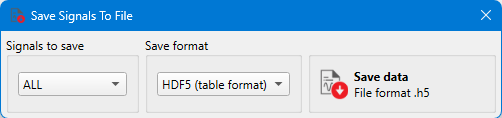
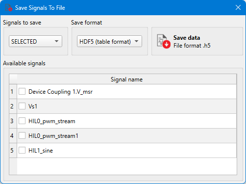

Signal Data Saving
This section describes the Signal Data Saving dialog
In the Signal Data Saving dialog you can save signals captured in Capture / TyphoonSim Scope or loaded in Signal Analyzer to the selected file format.


- Signals to save - choose whether to save all available signals or just the selected ones.
- Available signals - shows all available analog, digital, or Virtual signals that can be saved. This section is visible only if Selected signals is chosen for the Signals to save option (Figure 1).
- Save format - select the file format.
- Save data - when you click on the Save
data button, you will be asked to choose where you want to save the
file. After that, the saving process will be started. Note: Once signals are saved to the selected file format, a Signals View Configuration file (.svc file) with the same name will be created in the target directory. The Signals View Configuration file contains information how saved signals are arranged on viewports, signals color, line type, and other viewport settings. This file will be automatically found and opened in the Signal Analyzer tool when the saved signals data file is loaded.